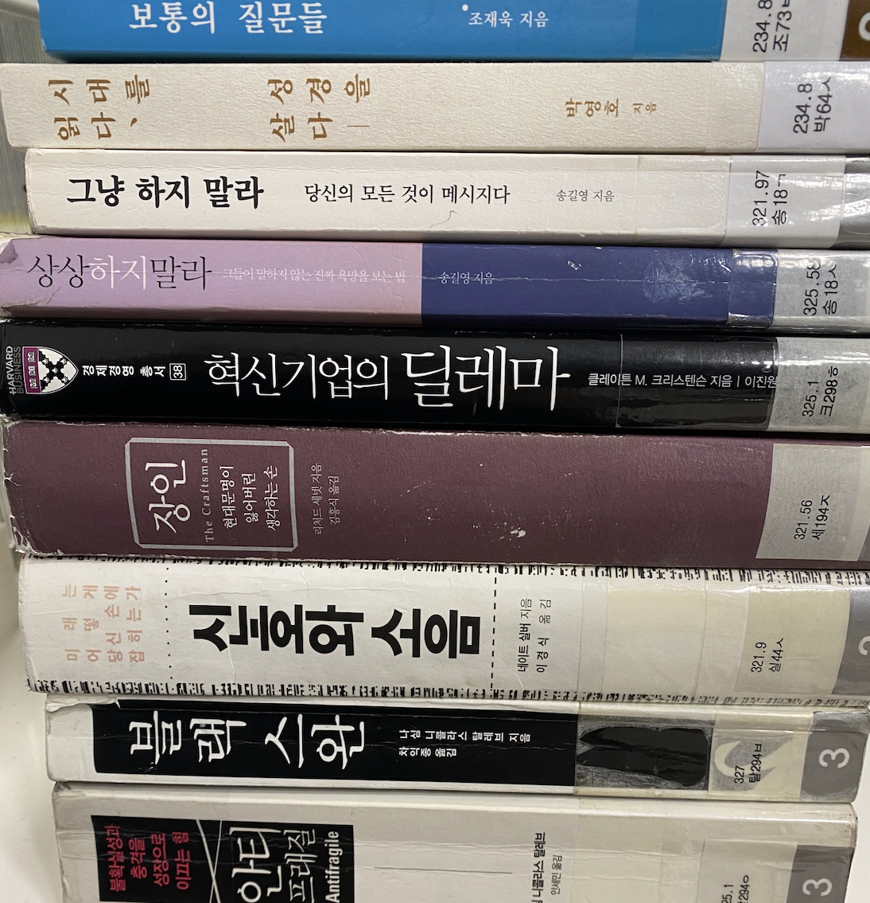

Reading Club Method
헤센 프로토콜
모두가 같은 책을 읽지 않아도 됩니다. 각자가 읽은 책을 가져옵니다. 자신의 언어로 말하고, 서로의 질문으로 더 깊어집니다.

Core Idea
책 소개가 아니라, 독자의 경험을 듣습니다
헤센 프로토콜은 광고나 요약이 아니라 실제로 책을 읽은 사람의 이야기를 중심에 둡니다. 한 사람이 책을 고른 이유, 붙잡힌 문장, 읽고 난 뒤 달라진 생각을 말합니다.
다른 사람들은 평가하지 않고 질문합니다. 질문은 소개자를 더 깊게 만들고, 듣는 사람에게는 다음에 읽고 싶은 책을 고르는 단서가 됩니다.
Meeting Rhythm
소개, 질문, 응답
- 소개 각자가 읽은 책과 그 책을 고른 이유를 말합니다.
- 질문 다른 사람들은 판단보다 궁금함을 앞세워 묻습니다.
- 응답 소개자는 질문을 통해 자신의 생각을 다시 정리합니다.